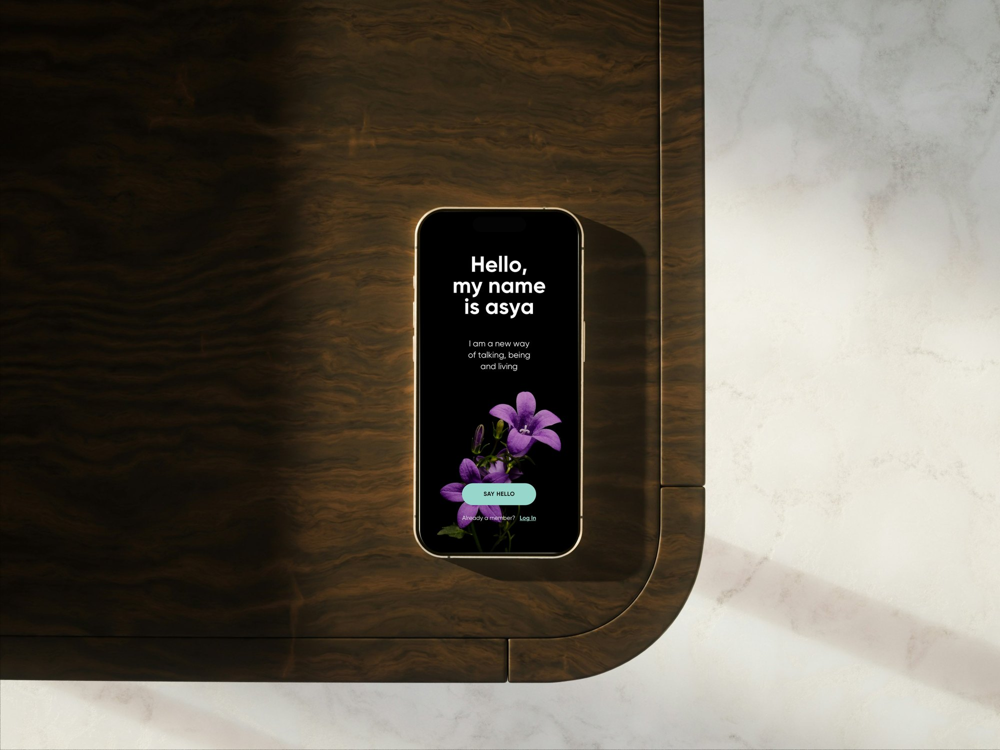
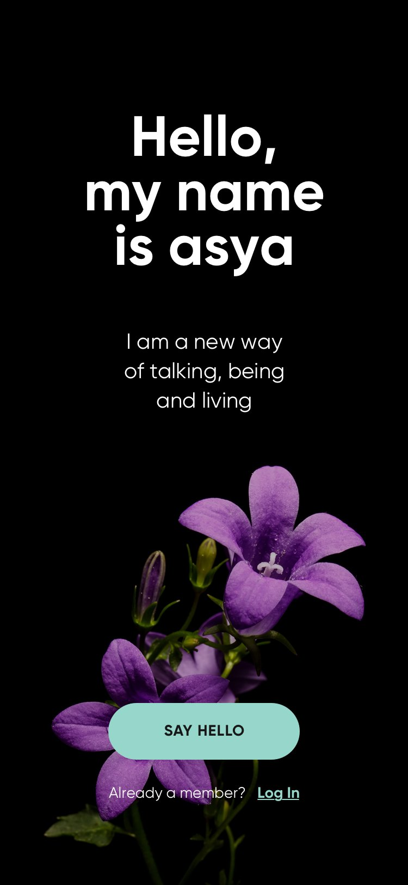
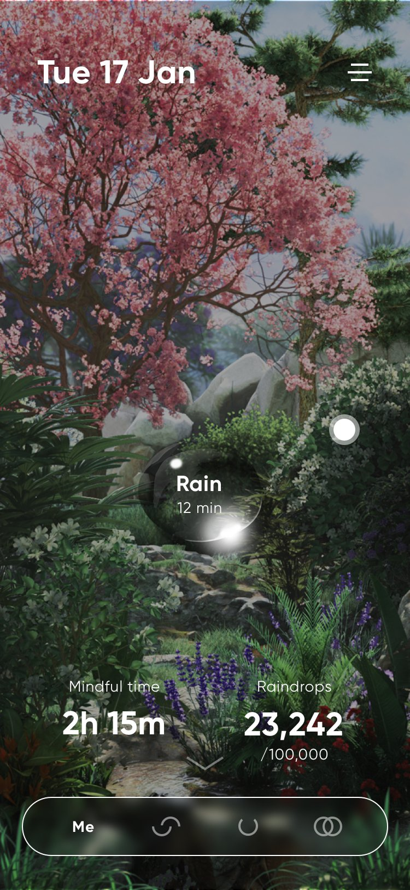
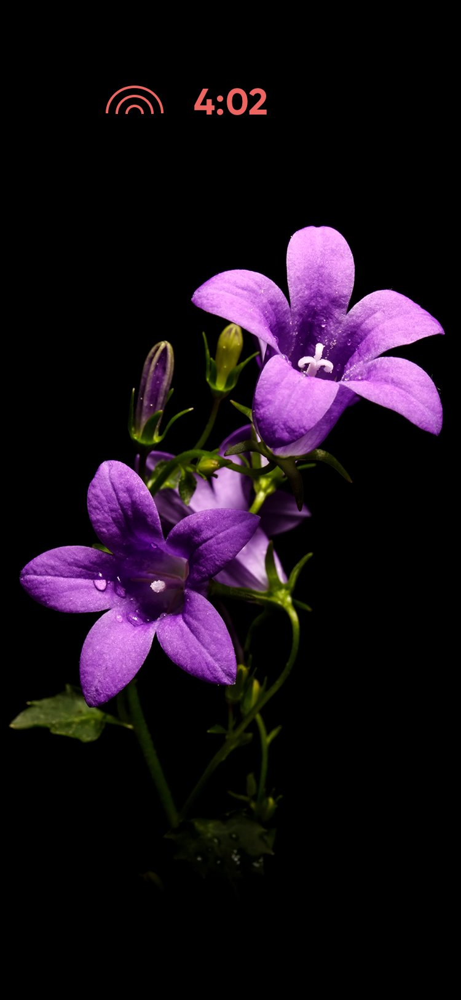
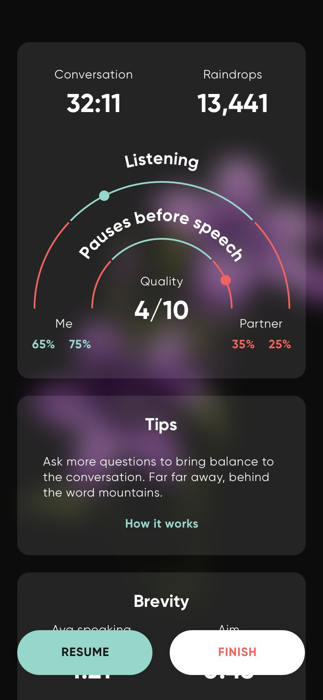
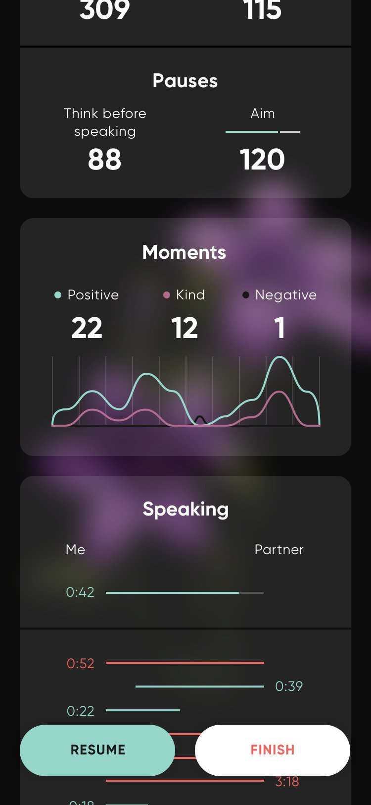
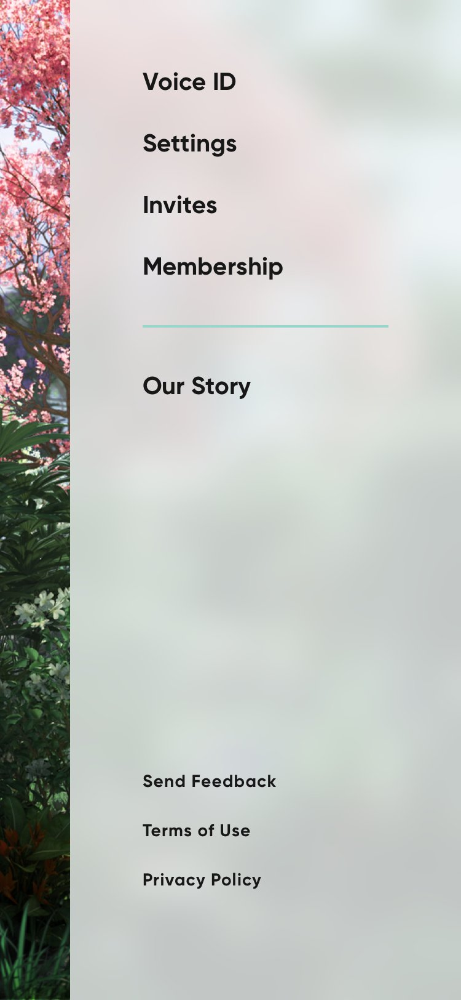
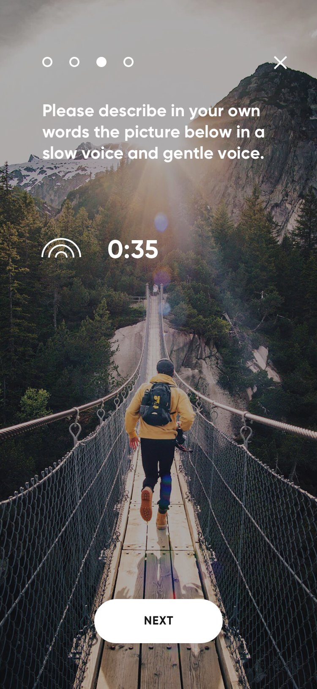
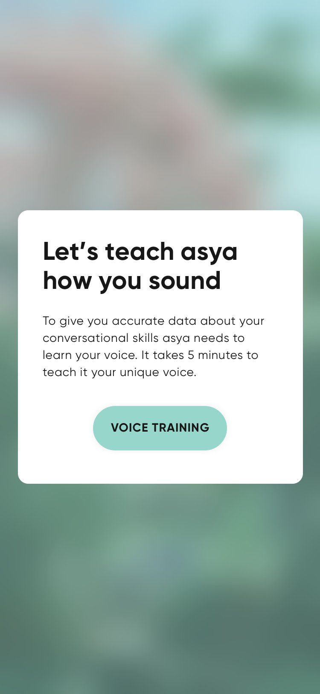

A mobile app that uses AI to show a conversation as a blooming flower. Winner of the Latvian National Design Award.

Make conversation dynamics visible, from speaking time and balance to emotions, in a way that helps without distracting or judging.
Every decision traces back to evidence. Each step has an ID, and every insight and decision names the evidence it came from. The steps below are an example from this project.
S001
Source
Show speaking time, balance and emotions on both sides.
S002
Source
Talks with the client on goals and who the app is for.
S003
Source
Testing the app with people in real conversations.
I001
Insight
Live data can easily turn into a scoreboard.
From S001, S003
I002
Insight
Emotional data shouldn’t feel like a report.
From S001, S003
D001
Decision
It blooms when the talk goes well and falters with long monologues.
From I001
D002
Decision
Each conversation’s flower joins a garden that grows over time.
From I002
D003
Decision
Rewards that bring people back, plus solo practice.
From D002
I led the UX. A UI designer did the visuals.
The phone sits on the table between two people.








Launched, and awarded the Latvian National Design Award in 2020.